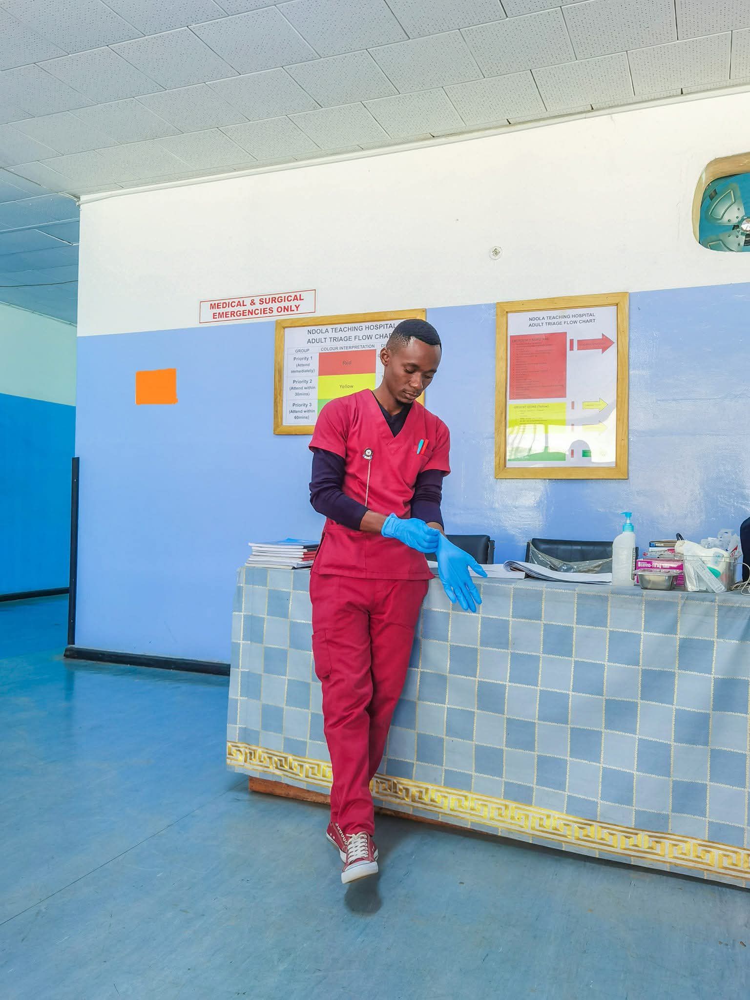
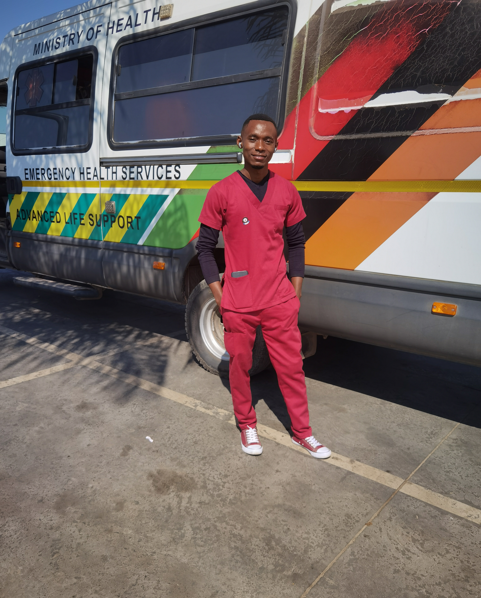
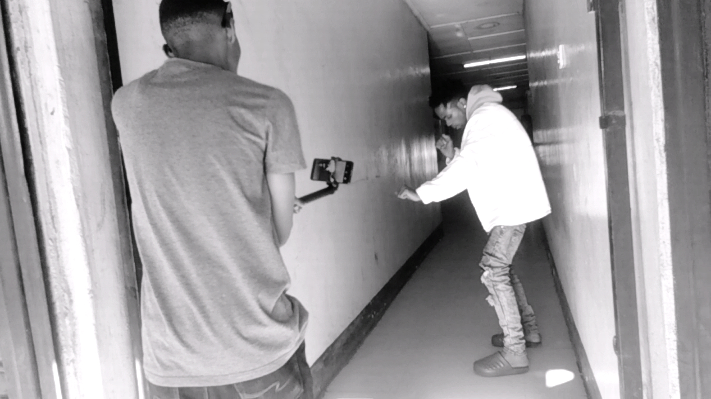
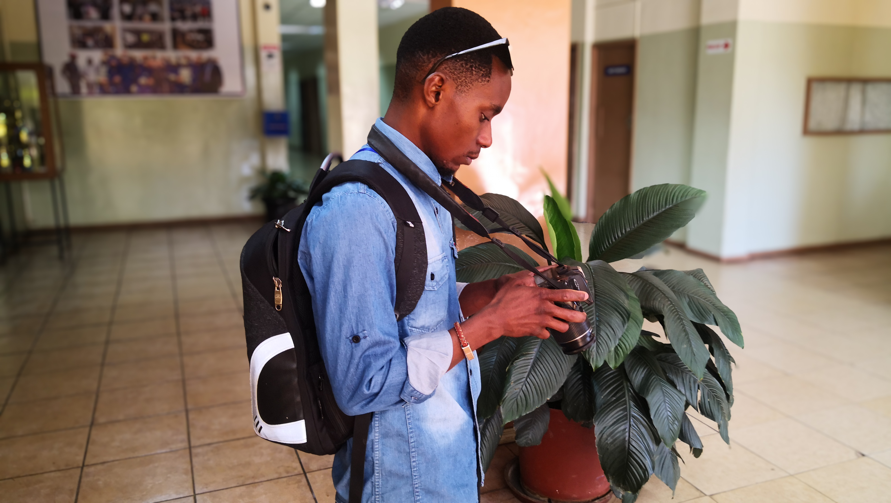

ISAAC C. CHONGO (Mr. CIC)
Nurse | Educator | Videographer | Photographer | Programmer

PROFESSIONAL SUMMARY
I am a qualified, registered and duly licensed nurse with a bachelors degree. I have a demonstrated
success in Outpatient care, Emergency care, Inpatient care as well as Nursing Education. My
passion for serving humanity is demonstrated through a sense of urgency to respond to dynamic
patient needs especially in emergency care and in professionally educating future care givers.
EDUCATION
- Chunga High School Board (2009-2011) : Grade 12 Certificate
- Chreso University (2015-2019) : Bachelors of Nursing
- Chreso University (2022) : Post-Graduate Diploma in Teaching Methodology
AREAS OF EXPPERIENCE
- Emergency Care
- Nursing Education
- Videography
- Photography
1. Emergency Care

Key Responsilities:
- Implementing and developing nursing care plan
- Performing assessments through vital signs to determine patient’s condition
- Identifying problems such as sprains, strains, cuts, bites, and minor injuries then dress
wounds, and manage airways
- Administering prescribed drugs and meals to the patients
- Effectively communicating with fellow team members such as physicians
- Providing clear education to patients and their families regarding diagnoses, treatment,
and aftercare
2. Nursing Education

Key Responsilities:
- Preparing and delivering lectures to student nurses as outlined by the curriculum
- Assessing and evaluating students’ class learning performance through preparation and
administering, and marking of assignments, tests and examinations
- Managing of intakes as a class tutor by getting views and reviews from students as
feedback for the improvement of their welfare at the institution
- Acting Nursing Head of Department in the absence of the Head of Department
- Participating in community outreach programs

Key Responsilities:

Key Responsilities:
5. HTML Programmer (obviously😁)